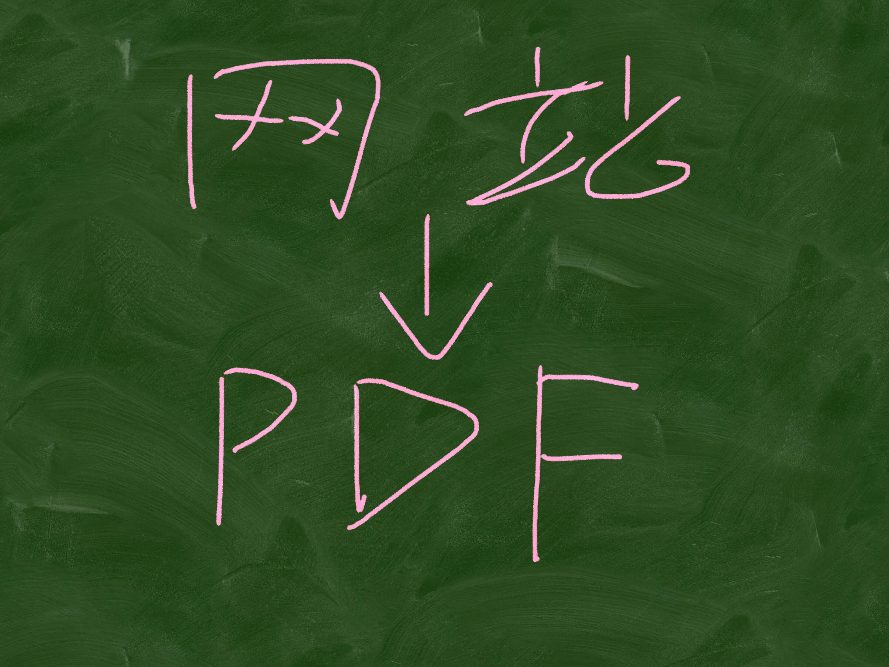
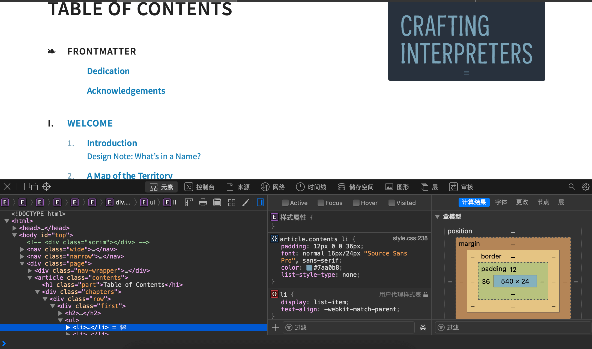
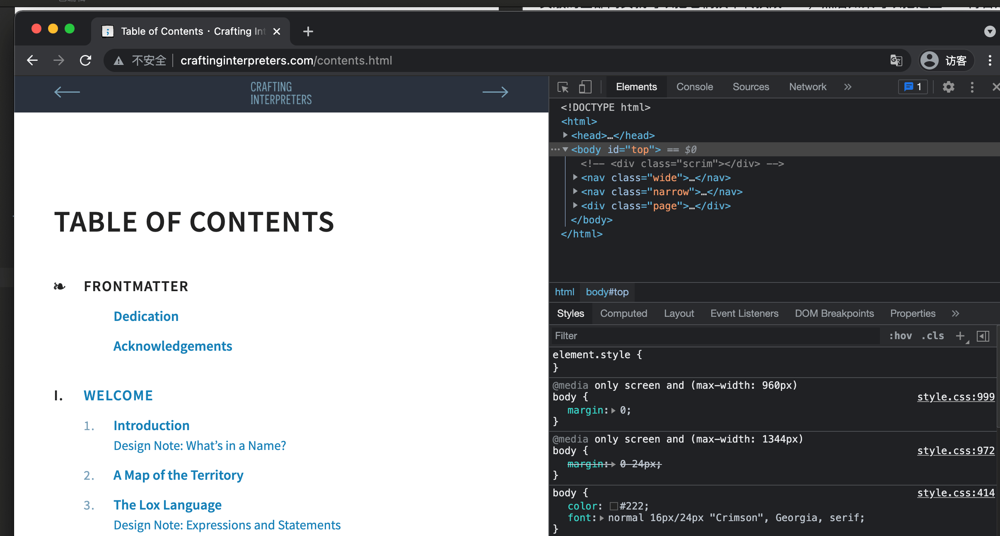
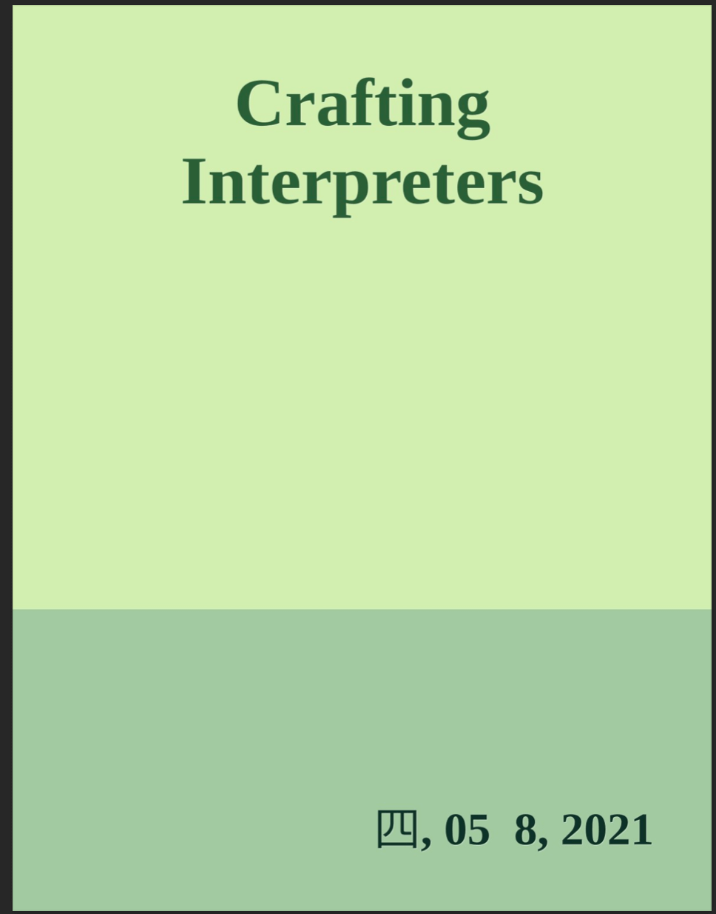

有一些国外的书籍没有引入国内更没有翻译，甚至都找不到PDF版本，这些书籍中有一些提供了免费的在线版本，可以通过访问网站来阅读整本书。
但是通过网站阅读在线版本在体验上要差很多，关键是不能进行写写画画。这时候就到发挥技术人员的专长的时候了——把在线版本制作成电子书。 有一些国外的书籍没有引入国内更没有翻译，甚至都找不到PDF版本，这些书籍中有一些提供了免费的在线版本，可以通过访问网站来阅读整本书。
但是通过网站阅读在线版本在体验上要差很多，关键是不能进行写写画画。这时候就到发挥技术人员的专长的时候了——把在线版本制作成电子书。

到公众号【iOS开发栈】学习更多Swift、SwiftUI、iOS开发相关内容。
《CRAFTING INTERPRETERS》（以下简称CI）是一本讲编译原理的书，它的官网是：http://www.craftinginterpreters.com。
大路不通
通过官网可以看到这本书在亚马逊售卖纸质书和电子书，价格分别是$59和$39。说实话这个价格确实有点高了，虽说知识无价可是花几百元买本书还是很肉疼的。国内的技术书不管是国人写的还是翻译过来的基本都在¥40～¥80左右。
一般获取这种外文书籍除了这种官方土豪途径外还有一些方法，比如到二手平台买电子版、影印版或者利用搜索引擎下载PDF，也可以到某电商平台找代下载。这几个途径都以失败告终，搜索引擎没有找到能够下载的地方，二手平台没有资源，电商平台虽然有能给代下载的可价格也在百元以上。
另辟蹊径
买不到、找不着，最后就只能试试自己做了。
在CI的官网提供了免费在线阅读的链接http://www.craftinginterpreters.com/contents.html。根据以前图片转PDF、Word转PDF的经验想到了是不是网页也可以转PDF呢？
单网页转PDF
顺着这个思路我找到一个可以在线把网页转成图片和PDF等格式的网站：https://www.web2pdfconvert.com。通过这个网站可以实现输入一个网站链接生成一个PDF文件的功能，但是CI这本书有那么多内容我也不能一页一页的生成呀。
不过如果一个网页可以生成PDF，那一整个网站不过就是很多个网页呗，那肯定也是可是可以生成PDF的。
通过上面那个web2pdfconvert的网站找不到了一个可以实现网页转PDF的API：https://www.convertapi.com/html-to-pdf#snippet=python，这是一个段python代码：
# Code snippet is using ConvertAPI Python Client
convertapi.api_secret = '<YOUR SECRET HERE>'
convertapi.convert('pdf', {
'File': '/path/to/my_file.html'
}, from_format = 'html').save_files('/path/to/dir')
这段python代码使用的是converapi网站提供的功能，它接收本地html作为输入参数，输出的是pdf文件。
网站转PDF
既然可以通过convertapi把单个网页的htlm文件转换成PDF，那么如果可以得到CI网页版的全部网页就可以把它们挨个转换成PDF，然后如果可以把这些PDF再合成一整个PDF不就大功告成了。
所以这里还有两个问题需要解决：获取CI网页版书籍的全部网页、把多个PDF文件合并成一个。
获取网页源代码
使用浏览器打开网页后是可以查看当前网页的HTML代码的，不同的浏览器有不同的操作方法，下面以Mac上面的Safari和Chrome为例：
- Safari中在当前页面右击后选择“检查元素”，可以查看当前页面源代码。

- Chrome 点击右上角三个点，在弹出菜单中选择更多工具->开发者工具（⌥+⌘+I).

从大纲获取每章节网址
通过对网页源代码的分析可以发现，整本书的章节内容在<div class="chapters">...</div>中，其中包含的每一个a标签对应的href就是对应章节的地址最后部分，在这个最后部分前拼接上http://www.craftinginterpreters.com/就可以得到对应章节的网址了。
比如Welcome这一章的a标签中href对应的是welcome.html，在它的前面加上http://www.craftinginterpreters.com/就成了http://www.craftinginterpreters.com/welcome.html，也就是Welcome这一章对应的网址。
从这本书的网站首页可以看到本书总共包含了大概有40个链接，如果手动把这些链接取出来需要很多时间，关键是作为一名程序员无法容忍自己做重复的工作。这些重复性的工作应该交给机器去执行，既迅速又准确。
可以执行HTML分析的工具数不胜数，这里就是用soup这个工具吧。这是一个使用python编写的专门做网页分析的工具，它的文档在https://beautifulsoup.readthedocs.io/zh_CN/v4.4.0/，里面有非常详细的使用说明，这里不再赘述。
下载章节的HTML文件
通过上一步我们获取到了每个章节的网址，那么剩下的就是把对应网址的内容下载到本地了。
其实这一步就更简单了，使用python中的urllib库通过不到20行代码就可以完成。具体使用方法可以参考：https://blog.csdn.net/john_bian/article/details/71025372。
这里要说的是在保存文件的时候最好按照网址在大纲中的顺序增加一个前缀，这样可以让下载下来的HTML按照大纲的顺序排列，方便后面的组装。
PDF合成
这里其实就是把多个PDF文件合并成一个，推荐使用python的PyPDF2工具。知乎上有一个使用示例可供参考：https://zhuanlan.zhihu.com/p/93239038。
终极方案
上面的方案肯定是可行的，不过我并没有实操。本来我是打算按照这个思路来的，可谁能想到正当我要实践的时候从B站看到了“PegasusWang”大佬的“Python不白学，抓取大佬博客生成电子书“视频，这个视频中提到了一个叫calibre的电子书工具，而这个工具可就神奇了。
PegasusWang参考的是这个网站的内容https://snowdreams1006.github.io/myGitbook/advance/export.html
calibre是什么
calibre是一个开源的项目，也是一个电子书的阅读器，使用这个阅读器可以自动下载一些带有css订阅功能的网站内容来生成电子书，也可以通过修改开源项目的代码来实现比较复杂的网站生成电子书功能。
下载calibre相关资源
首先要到calibre官网下载客户端，之后安装到电脑（本文以MacOS为例）。
MacOS要安装到Applications文件夹
然后从GitHub把calibre的开源代码下载到本地。
之后给calibre的转换工具建立软连接方便命令行使用：
sudo ln -s /Applications/calibre.app/Contents/MacOS/ebook-convert /usr/local/bin
编写转换脚本
在calibre源码的receipts目录下有很多写好的.receipe文件，这些都是可以用来生成电子书的脚本。
通过复制其中某个脚本然后经过简单的修改就可以得到自己的脚本了。
这里直接附上转换《CRAFTING INTERPRETERS》这本书的脚本：
#!/usr/bin/env python
##
# Title: Diario 10minutos.com.uy News and Sports Calibre Recipe
# Contact: Carlos Alves - <carlosalves90@gmail.com>
##
# License: GNU General Public License v3 - http://www.gnu.org/copyleft/gpl.html
# Copyright: Carlos Alves - <carlosalves90@gmail.com>
##
# Written: September 2013
# Last Edited: 2018-02-13
##
__license__ = 'GPL v3'
__author__ = '2016, Carlos Alves <carlosalves90@gmail.com>'
from calibre.web.feeds.news import BasicNewsRecipe
class CraftingINterpreterRecipe(BasicNewsRecipe):
title = 'Crafting Interpreters'
__author__ = 'Robert Nystrom'
description = 'Empty description'
tags = ''
language = 'es_UY'
timefmt = '[%a, %d %b, %Y]'
use_embedded_content = False
encoding = 'utf8'
remove_javascript = True
no_stylesheets = True
auth_cleanup = True
delay = 5
timeout = 20
def parse_index(self):
site = "http://www.craftinginterpreters.com/contents.html"
soup = self.index_to_soup(site)
articles = []
# ultag = soup.find_all("row")
# urls = ultag.find_all("a")
chapters = soup.find("div", class_="chapters")
print(chapters)
urls = chapters.find_all("a")
for link in urls:
print(link)
title = link.contents[0].strip()
url = "http://www.craftinginterpreters.com/" + link.get("href")
print(title, url)
articles.append({"title": title, "url": url})
ans = [(self.title, articles)]
return ans
把这段代码保存到clibre源码下的receipes目录下，命名为craftingInterprets.recipe。
很明显，这就是一个python文件，其中的主要工作是parse_index函数，这里面进行了html文件的解析和组装成calibre需要的格式的工作。而html文件的解析就是使用的soup工具（上面有提到）。
生成电子书
编写好了脚本后就可以使用ebook-convert命令来生成电子书了：
ebook-convert recipes/craftingInterprets.recipe .pdf
上面的命令执行需要半小时左右，其实calibre不仅可以生成PDF格式，epub/mobi等格式都可以，只需把.pdf改成.epub或者.mobi就可以了。
命令执行完成后可以看到最终会输出电子书存放的位置，就可以直接到对应目录找到刚生成的电子书了。😄😄😄

到公众号【iOS开发栈】学习更多Swift、SwiftUI、iOS开发相关内容。
总结
通过网站生成电子书解决了我获取这本书的需求，并且还没有花1分钱（如果国内可以买到我会买的），从头到尾用了大概2天时间。
虽然最终没有用到我自己理出来的方案，不过calibre基本上也是这个思路，而且我的方案肯定也是行得通的，只不过可能要遇到很多问题，但是收获也会更多。另外calibre生成的PDF更完善，比如可以支持章节的跳转。
最后感慨一下技术的强大和实用，也为我能够利用自己的能力为自己解决这个实际问题而由衷开心😄。
最后的最后感谢开源社区。🙏